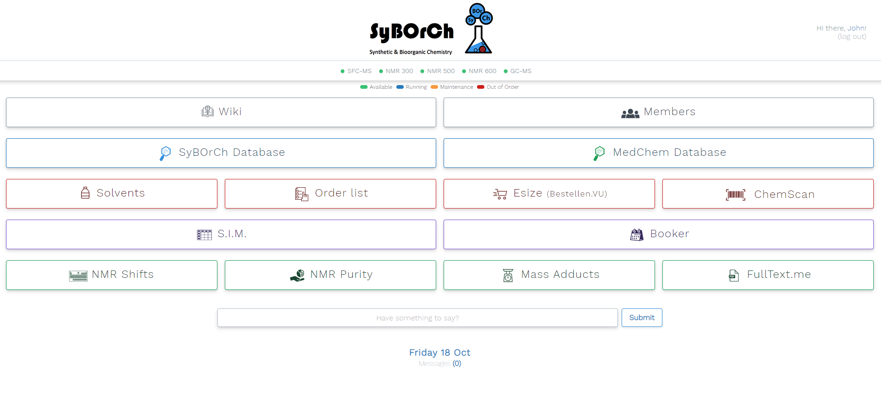
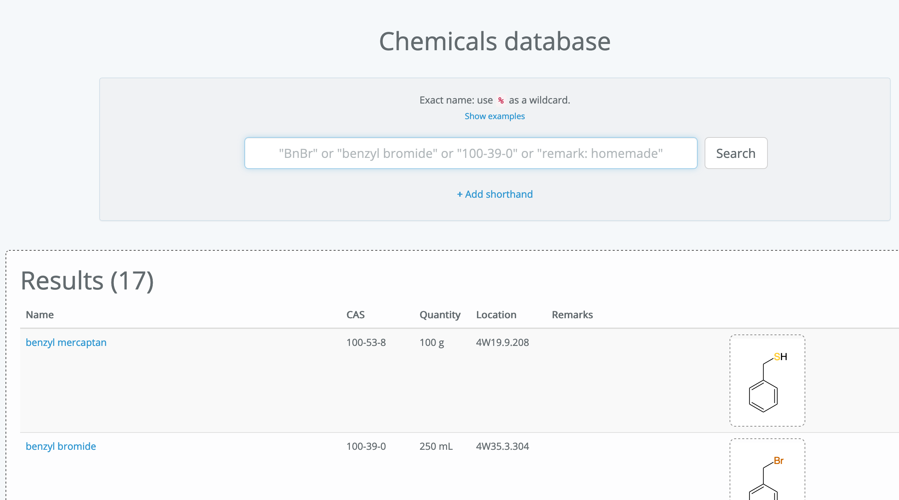
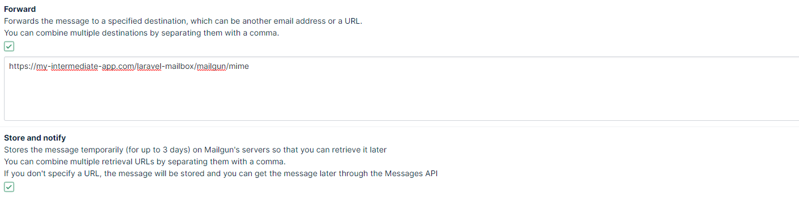
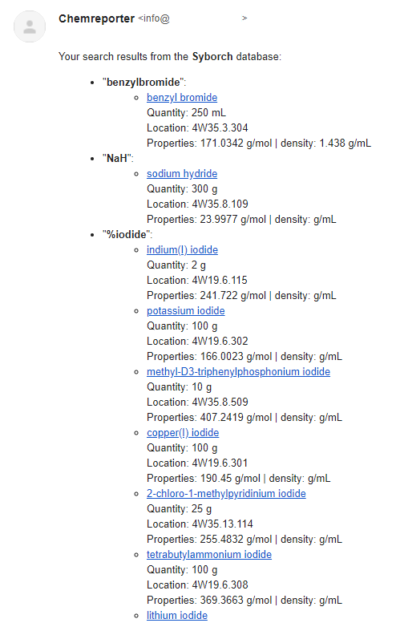

Searching a database by e-mail
- Published: 18-10-2019
Introduction
In this post, I want to share my experience when I introduced a feature for my research group where my colleagues can send their "grocery list" to a chemicals database and get a reply containing all found hits, using the Laravel Mailbox package by Marcel Pociot. A small problem: the databases are only accessible from the campus WiFi network. In this post I like to address how I circumvented the limitations of this firewall.
About the research group
As you might know, I am an organic chemist in the SyBOrCh ("Synthetic & BioOrganic Chemistry") research group at the VU in Amsterdam. If you want to read the story of how I became a programmer, make sure to check out the about page.
Long story short, I have made several web applications (depicted in the screenshot of the intranet page below), enhancing the workflow of our teams including two databases storing our chemicals.

In our department we share the floor with two other chemistry groups and we have these two databases in common that contain information about the chemicals we use (location, properties, quantities, etc.).
 )
When planning an experiment, it is important to know which chemicals are in stock (in both databases).
I was playing with the idea to make use of the Laravel Mailbox package to make it possible to send a "grocery list" to either one (or even both!) of the databases and get a list of hits.
Behind a Firewall
The problem is that our databases are shielded by a firewall of the university, which makes it impossible to reach the webhook. So, the simple approach to listen for incoming e-mails in the databases is off the table.
Since our databases can only make external requests but not receive external requests, my idea was to have an externally reachable intermediate application, which is responsible for storing incoming e-mails.
Next, using a scheduled artisan command I wanted both databases (syborch / medchem) to retrieve any new e-mails by calling a certain endpoint ('/groups/syborch' or '/groups/medchem') on this "intermediate application".
<?php
// In the database's Artisan command
handle()
{
// Call the endpoint on the intermediate app
// Using Guzzle Http client
$response = (string) (new Client)->get('https://my-intermediate-app.com/groups/syborch')->getBody();
$mails = collect(json_decode($response));
}
The "intermediate application" will return any 'unprocessed' emails with their id and keywords and subsequentially mark them as processsed. The keywords are extracted from the e-mail by newlines via a keywords() method that uses the following regex: $newlines = "/\r\n|\n|\r/".
<?php
// In the intermediate application's controller
// associated with the '/groups/{group}' route
public function fetchMails()
{
$mails = ReceivedMail::where('processed_at', null)->where('group', $group)->get();
if (count($mails) < 1) {
return [];
}
$mails->each->update(['processed_at' => now()]);
return $mails->map(function ($mail) {
return [
'id' => $mail->id,
'keywords' => $mail->keywords(),
];
});
}
The corresponding database will then perform a search against all keywords and generate a $results array, indexed by the keyword. Then, a POST request will be send to the "intermediate application" containing the e-mail's id and the search results.
<?php
// In the database's Artisan command
public function handle()
{
// retrieve the e-mails
foreach ($mails as $mail) {
$results = [];
foreach ($mail->keywords as $keyword) {
$results[$keyword] = // retrieve results for the keyword
}
// Post the results back to the intermediate application
// using Guzzle Http client
(new Client)->request('POST', 'https://my-intermediate-app.com/queries', [
'json' => [
'mailId' => $mail->id,
'results' => $results
]
]);
}
}
Back in the "intermediate application", the POST request is received. The corresponding e-mail is requested and a reply is prepared containing all search results.
<?php
// In the intermediate application's controller
// associated with the '/queries' route
public function reply(Request $request)
{
$mail = ReceivedMail::findOrFail($request->mailId);
Mail::to($mail->sender)->send(new SearchResultsMail($mail, $request->results));
return response([], 200);
}
Receiving the e-mails
Following my previous blog on the Laravel Mailbox package, I found out that when using Mailgun, the webhook was not called. I didn't figure out the exact reason, but I also needed to enable "forwarding" (on top of the "Store and notify" option) in Mailgun and use the same webhook URL as mentioned. After enabling this option, everything worked as expected.
Following my previous blog on the Laravel Mailbox package, I found out that when using Mailgun, the webhook was not called. I didn't figure out the exact reason, but I also needed to enable "forwarding" (on top of the "Store and notify" option) in Mailgun and use the same webhook URL as mentioned. After enabling this option, everything worked as expected.

In the "intermediate application", I listen for e-mails sent to 'syborch@[a-certain-address].com' and 'medchem@[a-certain-address].com' which have different handlers, storing the ReceivedMail models and setting the appropriate 'group'.
<?php
// In the intermediate application's AppServiceProvider.php
public function boot()
{
Mailbox::to('syborch@[redacted]', SyborchMailHandler::class);
Mailbox::to('medchem@[redacted]', MedchemMailHandler::class);
}
Conclusion
New workflow
Our research group can now send an enter-separated "grocery list" to either one or both of the databases after they will receive a comprehensive list of chemicals we have stored. I bet this is going to save a lot of time in the preparation for bigger experiments.
Example of the e-mail reply from the database:

Cronjob
For now, I've set a cronjob that executes the artisan command for both databases at every minute. It is not ideal, but the best approach I could think of since we can't directly listen to a webhook from Mailgun since we're behind the firewall.
Mailgun
Furthermore, I had to use "Forwarding" in combination with the "Store and Notify" services within Mailgun. Also, make sure to use the webhook-key as the MAILBOX_MAILGUN_KEY.